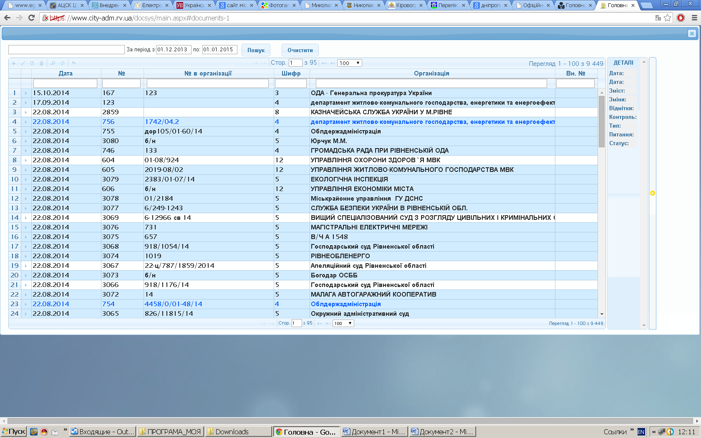

- УВАГА! Якщо при реєстрації документа виникають застережні записи (наприклад рис.11-18 виділено червоним «Киньте файл…»), краще оновити сторінку, а тоді продовжувати реєстрацію документа.
Загальний список документів, який доступний для роботи у відповідному управлінні (Рис. 1)

Рис. 1